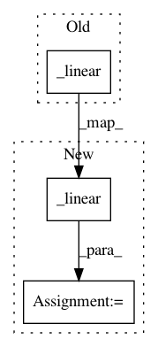

6b083c769d953662125be0840fa2f1507fe49494,tflearn/layers/recurrent.py,GRUCell,__call__,#GRUCell#Any#Any#Any#,594
Before Change
with tf.variable_scope(scope or type(self).__name__): // "GRUCell"
with tf.variable_scope("Gates"): // Reset gate and update gate.
// We start with bias of 1.0 to not reset and not update.
r, u = array_ops.split(value=_linear([inputs, state],
2 * self._num_units, True, 1.0, self.weights_init,
self.trainable, self.restore, self.reuse),
num_or_size_splits=2, axis=1)
r, u = self._inner_activation(r), self._inner_activation(u)
with tf.variable_scope("Candidate"):
After Change
with tf.variable_scope(scope or type(self).__name__): // "GRUCell"
with tf.variable_scope("Gates"): // Reset gate and update gate.
// We start with bias of 1.0 to not reset and not update.
_w = _linear([inputs, state],
2 * self._num_units, True, 1.0, self.weights_init,
self.trainable, self.restore, self.reuse)
r, u = array_ops.split(value=_w, num_or_size_splits=2, axis=1)
r, u = self._inner_activation(r), self._inner_activation(u)
with tf.variable_scope("Candidate"):
c = self._activation(
_linear([inputs, r * state], self._num_units, True, 0.,
In pattern: SUPERPATTERN
Frequency: 3
Non-data size: 3
Instances
Project Name: tflearn/tflearn
Commit Name: 6b083c769d953662125be0840fa2f1507fe49494
Time: 2017-02-27
Author: aymeric.damien@gmail.com
File Name: tflearn/layers/recurrent.py
Class Name: GRUCell
Method Name: __call__
Project Name: tflearn/tflearn
Commit Name: 4acd61442955baa2509fdc2961284c9d2a986f34
Time: 2016-07-01
Author: aymeric.damien@gmail.com
File Name: tflearn/layers/recurrent.py
Class Name: GRUCell
Method Name: __call__
Project Name: tflearn/tflearn
Commit Name: 4acd61442955baa2509fdc2961284c9d2a986f34
Time: 2016-07-01
Author: aymeric.damien@gmail.com
File Name: tflearn/layers/recurrent.py
Class Name: BasicRNNCell
Method Name: __call__